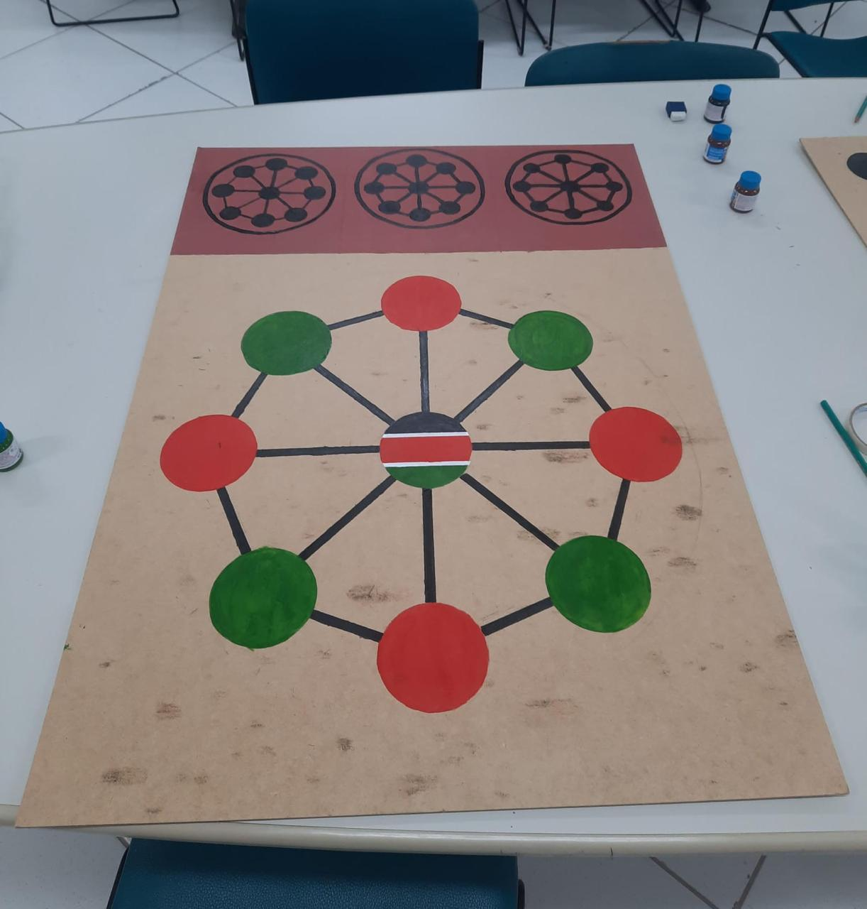

QuêniaShisima
Jogo originário do Quênia que simula uma bacia de água, onde os participantes movem peças para alinhar três em sequência. O processo de reconstrução resultou na confecção de 5 tabuleiros (sendo um ampliado em MDF com as cores da bandeira queniana, três menores em MDF e um em madeira produzido com o apoio do Campus São José). As peças foram feitas em versões maiores para facilitar o manuseio e a visualização pelos idosos.
Conhecer história →